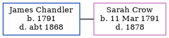

James Phillis Chandler 1791 - c1868
[ Home ] | [ Calendar ] | [ Surnames Index ] | [ Family History ]James Chandler, the husband of Sarah Crow (the 4 times great-grandmother of Nigel Horne), was born in Birchington, Kent, England in 1791<span class="citation">1,2,3</span>. He married Sarah in Minster, Thanet, Kent, England on Aug 31, 1816.</p><p>Throughout his life, he lived in Minster in 1841<span class="citation">1</span>, in 1851<span class="citation">2</span> and in 1861<span class="citation">3</span>. <p>He died <i>c.</i> 1868 in Thanet.
Citations
- 1841 England Census Online publication - Provo, UT, USA: The Generations Network, Inc., 2006.Original data - Census Returns of England and Wales, 1841. Kew, Surrey, England: The National Archives of the UK (TNA): Public Record Office (PRO), 1841. Data imaged from the National
- 1851 England Census Online publication - Provo, UT, USA: The Generations Network, Inc., 2005.Original data - Census Returns of England and Wales, 1851. Kew, Surrey, England: The National Archives of the UK (TNA): Public Record Office (PRO), 1851. Data imaged from the National (Relation to Head of House: Head)
- 1861 England Census Online publication - Provo, UT, USA: The Generations Network, Inc., 2005.Original data - Census Returns of England and Wales, 1861. Kew, Surrey, England: The National Archives of the UK (TNA): Public Record Office (PRO), 1861. Data imaged from the National (Relation to Head of House: Head)
Family Tree
Generated by Ged2Site. Last updated on Jul 20, 2025